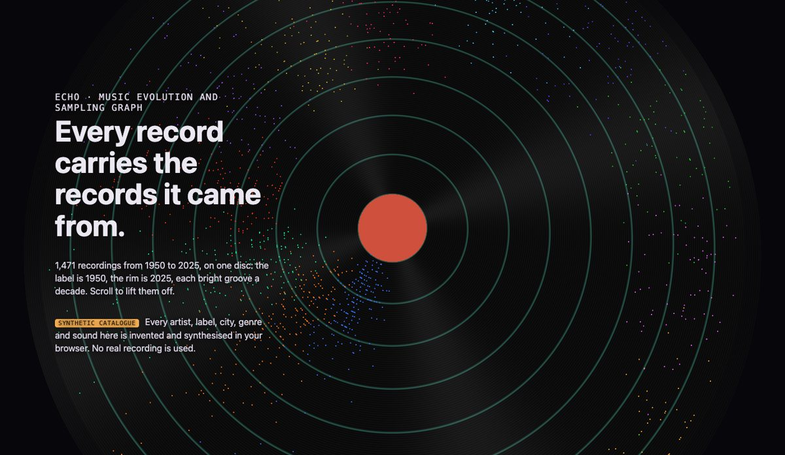
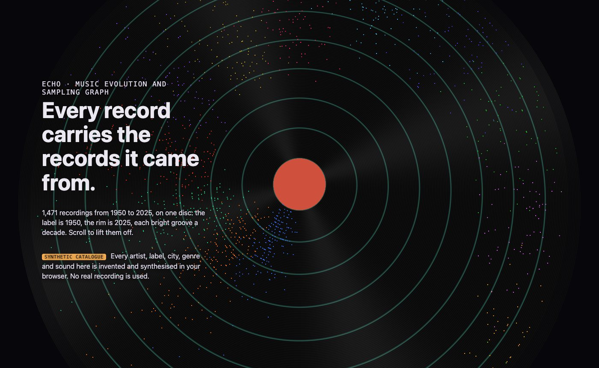
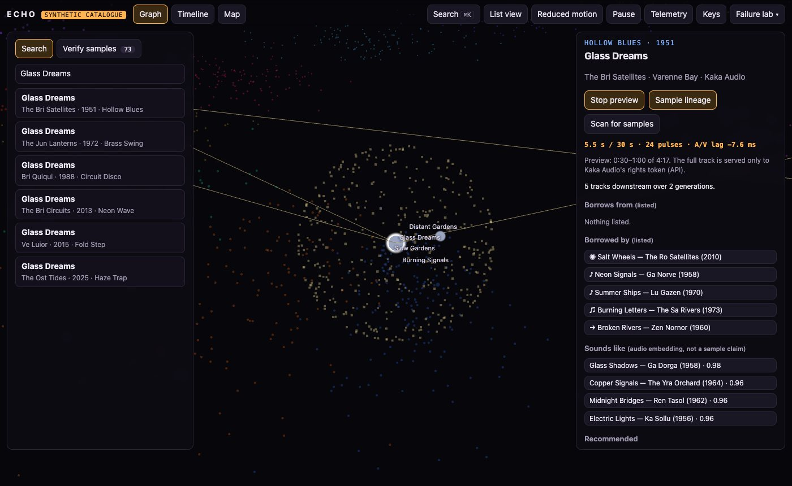
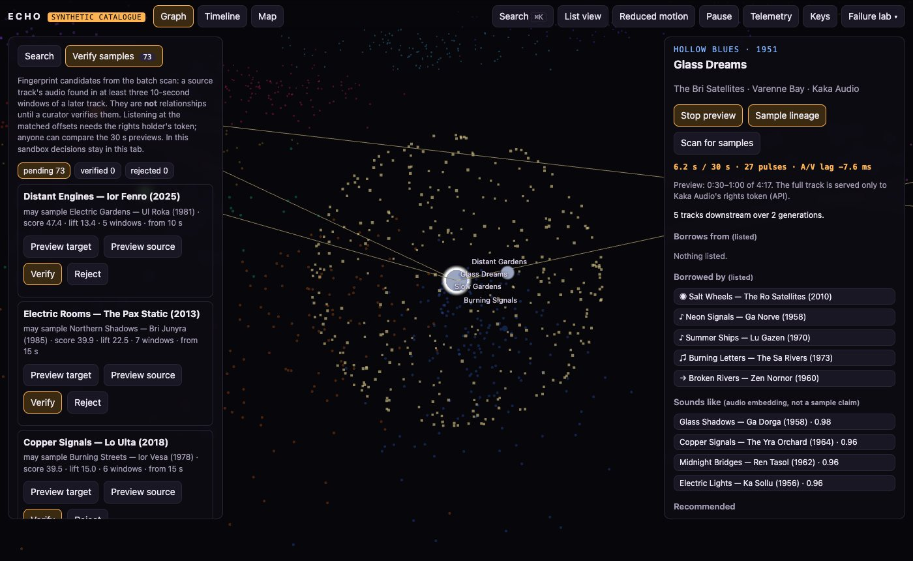
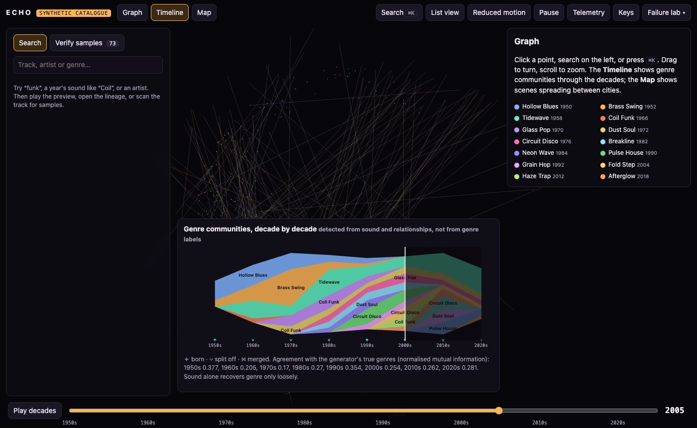
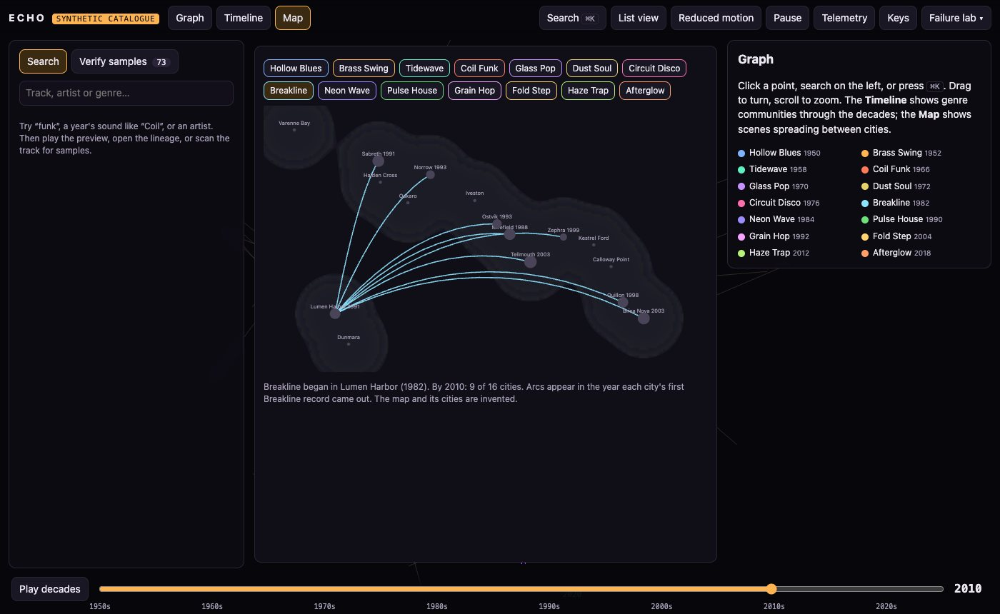

TypeScript · Web Audio · audio fingerprinting · 2026-10
Can a Fingerprint Find the Sample?
A motion-first music graph: a spinning record whose grooves are decades lifts into a constellation of 1,471 synthetic recordings, with sample lineage in waves, genre communities through the decades, scenes spreading between cities, and an audio fingerprint that finds a buried loop's source 47% of the time at 87% precision (and never when the producer sped it up).

Built from blueprint 06 of a written build book (Volume V, motion-first products) as one vertical slice. Everything is synthetic: artists, labels, genres, cities, the map and all 1,471 tracks come from a generator in the repository, and every sound is synthesised from the track's parameters. No real recording, name or place is used. A hidden truth (which tracks really contain another's audio, including 36 samples the catalogue does not list) is used only to score the detector. Not built: real music or metadata providers, speed- and pitch-invariant fingerprints, the nine-service split, Kafka, Neo4j, OpenSearch, Terraform and cloud deployment, single sign-on, billing.
01 — The problem
A music supervisor, a label or a fan wants to know where a record's sound came from: which loop it samples, what it remixes, which scene it grew out of. Playlists flatten that; a graph shows it. The hard part is the relationships nobody listed. Can an audio fingerprint find a sample buried under another producer's drums, and how much should anyone trust it?
The build book's rule for this volume is that the website is the product, with motion that carries state. Blueprint 6 of ten, built as its demo scenario end to end.
02 — What I built
A Next.js site that runs entirely in the browser on synthetic fixtures, plus a Fastify API on PostgreSQL behind the same interface, started by one docker compose up.
- A synthetic catalogue of 1,471 tracks, 420 artists, 14 invented genres and 16 invented cities, with a hidden truth of who borrows from whom.
- Deterministic synthesis: samples really contain the source's audio (looped, sometimes sped up), remixes play over the original, covers re-play the tune.
- Spectral-peak fingerprinting with rarity-weighted votes, evaluated against the truth on a held-out split.
- Temporal communities from sound embeddings and relationships, linked across decades.
- Motion driven by state: the record-to-constellation morph, lineage waves, an analyser-driven halo, a stream graph, a scene map, with reduced motion, pause, deep links and a list view.
- Rights and curation: 30-second previews for anyone, full tracks only for the label's rights holder, and a per-tenant verification queue.
03 — How it was built
- 01
A record that is a timeline
Each track sits at a radius set by its year (the label is 1950, the rim 2025) and an angle set by its genre. On the record those points lie on the grooves, a bright ring every decade, turning at 33⅓ rpm. Scrolling lifts them off the disc on the GPU into the constellation, and the same positions carry through every later view, so the story and the product are one scene.
- 02
Sound you can check
Every clip is synthesised from the track's parameters: per-record drum kits, tuning a little off, played rather than quantised timing. A track that samples another literally adds the source's audio, looped and sometimes sped up 3–6% as producers do. Rendering a 30-second window takes about 60 ms. Because the audio is generated, the truth is known: 124 sampling relationships, 36 of them missing from the catalogue.
if (time >= s.atS && time < s.untilS) y += s.gain * sampleAt(src, s.sourceOffsetS + ((time - s.atS) % loop) * s.speed, sr); - 03
A fingerprint, measured honestly
Tonal spectral peaks above 300 Hz are paired into (f1, f2, Δt) hashes and matched against an index of the first 30 s of every track (3,295,078 hashes). Two unrelated tracks at nearly the same tempo first scored 41 to 54, because they shared harmonics of the same notes and drum tones. Weighting votes by how rare a hash is, and requiring the match to stand out from the field, fixed most of it. Thresholds were chosen on half the relationships. On the other half, clean 10-second excerpts found the source 47% of the time at 87% precision, 16% with noise at 10 dB, and 0% when the producer had sped the loop up.
- 04
A queue, not a verdict
The batch scan checks nine windows of every track from 1975 on, and needs three to agree. It queued 73 candidates: 17 are real, including 17 of the 36 unlisted samples. Sorted by score, 8 of the top 10 are real. So matches go to a curator, who verifies or rejects them. Decisions are idempotent and audited, and they stay inside that label's workspace: a second tenant sees none of them.
- 05
The graph answers the sound
Playing a preview sends the worker-rendered clip through a Web Audio analyser. Band energies drive a particle halo, and loudness onsets pulse the track and its relatives. The kicks are known, so the lag is measured rather than assumed: over 20 seconds, 20 pulses landed on a kick with a median lag of −8.8 ms and a 95th percentile of 43.6 ms, at 60 frames a second. When the preview service is cut, the graph keeps time on the known beat grid and retries until it returns.
- 06
Communities through the decades, and scenes on a map
Each decade, artists are linked by how alike their tracks sound and by relationships. Label propagation finds communities, which are tied across decades by shared artists into persistent ids with births, splits and merges, drawn as a stream graph. Agreement with the true genres is modest (normalised mutual information 0.17–0.38), and the page says so. On an invented map, arcs show a scene spreading from its first city: Breakline began in Lumen Harbor in 1982 and reached 9 of 16 cities by 2010.
04 — Results
The demo. The opening record, and the constellation after a preview has started and its lineage has opened:


The verification queue, the stream graph of communities and the scene map:



| 10 s query | Recall | Precision |
|---|---|---|
| Clean | 47% | 87% |
| Noise 10 dB | 16% | 100% |
| Sped up 3% | 0% | – |
| Remixes | 63% | 75% |
Checks. 99.3% statement coverage of the domain and motion code. Every API response is validated against the OpenAPI document. Audio rights are tested for anonymous, viewer, curator, the wrong label and the rights holder. Row-level security blocks a query with no WHERE clause. Playwright walks the scenario, reduced motion, keyboard only, three failures with recovery, the mobile fallback, the A/V lag under 50 ms, and visual baselines.
Performance. 60 FPS with a real GPU. The artist graph query takes 1.3 ms at p95. Under 32 concurrent clients the API served 1,327 reads a second, and a fingerprint match of a 10-second clip took 29 ms at p50.
Watch the 2 min 12 s captioned recording (silent: the visuals are the analyser's).
05 — What I'd do next
- A speed- and pitch-invariant fingerprint (chroma or tempo-normalised hashes), since every sped-up sample was missed.
- Louvain or a temporal block model for communities, to see whether the 0.17–0.38 agreement is the method or the signal.
- Let curators listen at the matched offsets with a rights token, and publish verified relationships to the shared catalogue through review.
- Real, licensed catalogue adapters behind the provider interface.